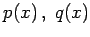

Inhalt Index DeskTop Bronstein

 Numerische Mathematik Integration gewöhnlicher Differentialgleichungen
Numerische Mathematik Integration gewöhnlicher Differentialgleichungen


Die wichtigsten Methoden zur Lösung von Randwertaufgaben bei gewöhnlichen Differentialgleichungen sollen an der folgenden einfachen linearen Randwertaufgabe für eine Differentialgleichung 2. Ordnung beschrieben werden:
Die Funktionen  und f(x) sowie die Zahlen  und
und  sind gegeben.
sind gegeben.
Die beschriebenen Methoden lassen sich sinngemäß auf Randwertaufgaben bei Differentialgleichungen höherer Ordnung übertragen.